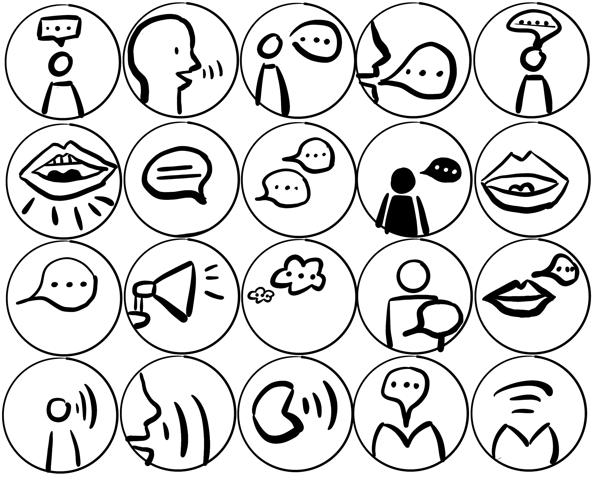
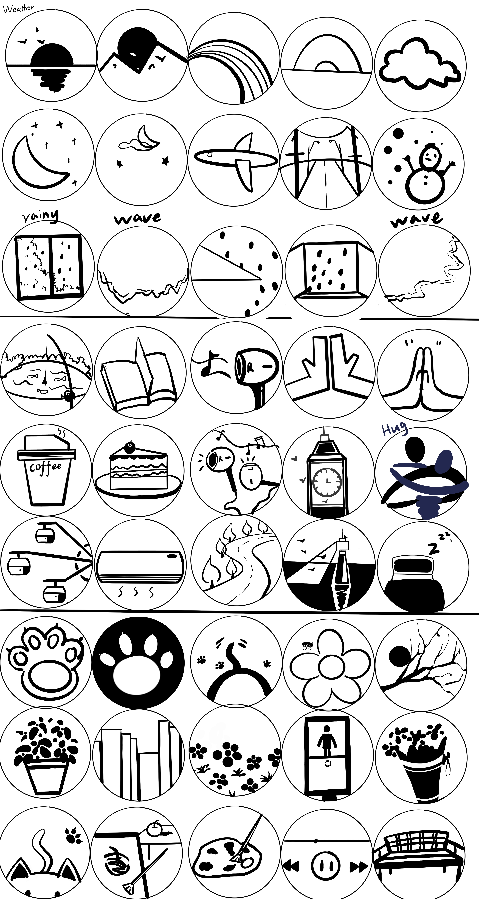
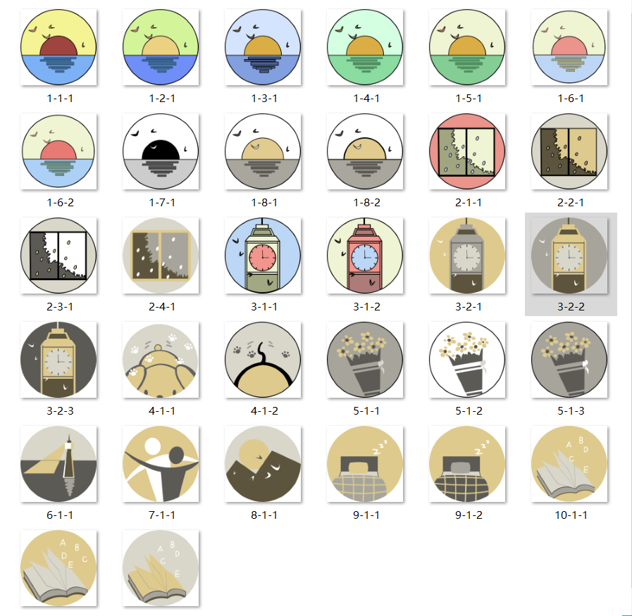

Welcome to my portfolio
Digital Media Studio 1


Digital Design Project 1
Artist statement
The objective of this project was to create a new narrative video by re-editing the visual and audio components of two completely unconnected videos. The basic tone of the video is creepy and terrifying, and it centers on a collection of horror stories that are brought on by phone calls. Understanding the film and audio material as a whole was crucial for the production process. To see how the two seemingly unconnected videos were connected, I continued to watch the video. Even though this approach had to be a little tedious, seeing the videos helped me make the decision to create a video with a horror theme. After completing the basic planning, I formally began the editing process. I think carefully and logically during the entire editing process, and I have to ask myself questions all the time. What does this picture in this frame mean? Does connecting the two clips make sense? My first video showcasing my artistic individuality is this one. Nevertheless, it is childish and has errors. But I value it greatly. Since it was the first time I had translated a concept from my thoughts into reality, I was proud and delighted when I finished all the clips and clicked play.
Digital Design Project 2
Brainstorming

Idea-generate using the term "Clam." Collect numerous terms that are linked and organize them into categories. As a result, there are more possibilities available during the sketching process.
Cube Training
Four black squares are all that is needed to communicate various messages using endless combinations and permutations.
Sketching training
In the least amount of time possible, create as many sketches of a subject as you can. Through this project, I was able to comprehend the purpose of drawings, which is to quickly gather ideas and decide on a composition in order to set up the next phase of creating icons in fine detail.
Sketching
尽On the basis of the words discovered during the brainstorming, sketches were mixed and created as much as feasible. I was able to maximize the use of my ideas as a result. I finally decided on my top nine icons, which I then vectorized in AI.
Color Matching Options
Find a better color match and add color to the icons.
More color matching options
To make the color scheme work with all of the icons, experiment with additional color schemes and icon combinations.
Color scheme determined
Utilize these 5 colors to complete the icon drawing.
Sound effects selection
To locate different sound effects that match the icon, search through several web sound effect sites.
Audio editing
Since there are numerous variations among sound effects, including variations in sound length and size. It requires sound editing software to be altered./p>
Web Effect
There is no typography or font choice at this time, and the text and icons are both positioned to the left.
HTML+CSS
By using HTML and CSS, features like text centering, three-column icon layouts, and font modifications can be achieved.
Artist statement
Many lovely things immediately came to mind when I saw the theme Calm, which led me to decide there and then to create icons using it as the theme. There is always something that will make you feel tranquil and sleepy when you see it, hear it, or feel it. The goal of the work is to represent these items as icons so that the audience can likewise experience their beauty when they see them. I truly enjoy the process of creating icons, whether it involves meticulously sketching vector graphics, painstakingly coordinating colors, or brainstorming sketch ideas. My thoughts turning into reality is a sensation I genuinely enjoy. To make the icon stand out and capture attention, I focused on using warm, low-saturation hues for the color scheme and boosted the brightness between colors. In keeping with the notion of "Clam," we decided against outlining the form to lessen the overall stimulus of the emblem to the audience. The selection and development of the audio and HTML presented some challenges for me. First of all, I had to hunt for relevant resources online because I had no idea how to generate sounds. Second, I had no prior experience with programming. However, these challenges also helped me identify how I might continue to develop. Learning and conquering obstacles are tedious but worthwhile processes. I believed the project to be flawless when I had just finished it. I had more to think about after reading my mentor's feedback on the project and realizing that it could have been done better.
Digital Design Project 3
Brainstorming
Brainstorm on the 3D theme of the word "park". Collect numerous terms that are linked and organize them into categories. The search process for 3D models is now more diversified as a result.
Preliminary environmental mapping
An initial environment map that shows where major areas are located and how to navigate them. Ideas that have been planned out in advance
3D model resource selection
Go to the Unity Store and find a 3D model that works. During the model discovery process, decide on the "Low Poly" environment's general aesthetic.
Initial environment setup
environment building in its preliminary stages using the discovered 3D model and the environment map.
Environment 1 mapping (lighting)
Map the environment in layer one further by including further lights, noises, and model specifics.
Environment 2 mapping (lighting)
Map the environment in layer two further by including further lights, noises, and model specifics.
Add sound and light effects
In order to distinguish between the two distinct environments, various sound and lighting effects are added to the setting.
Camera settings
The player's point of view and how to control the main character are both directly impacted by the camera setting. A script that allows the camera to follow the player's movements ties the character to the camera.
Overall Environment
Two layers make up the final, comprehensive environmental impact. Daytime and nighttime are the two main climatic zones.
Artist statement
The main character is transported from the actual world to the park of his youth when, as a result of the power of the magic tree, he falls through the magic hole. The general setting is divided into two scenes: the park in the past and the park in the present, and the 3D environment's overall design is "low poly." Cool tones, low saturation colors, low lighting, and quiet sound are the defining characteristics of layer 1's environment. The environment of layer 2 is distinguished by warm tones and high saturation colors; the light is warm and bright; the sound is joyful and full of wonder.The primary difference between layer one's environment and layer two's is intended to heighten the realism of the audience crossing while also adding a sense of magic to layer two. Programming and 3D modeling presented some challenges for me. Since I don't know how to create 3D models, I first had to hunt for them in the Unity store. In terms of scripting, there were many little issues that arose while the environment was operating, necessitating frequent script modifications. Occasionally, it took a while to address a minor issue. Even though there are many obstacles, I usually feel really satisfied after overcoming an issue.